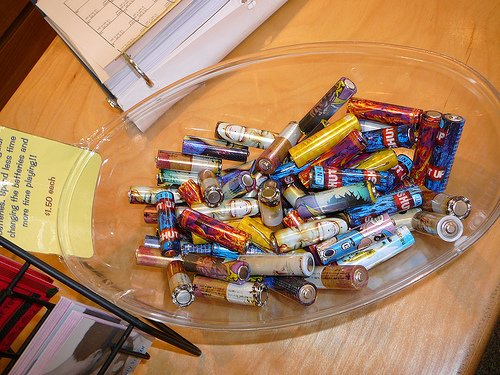
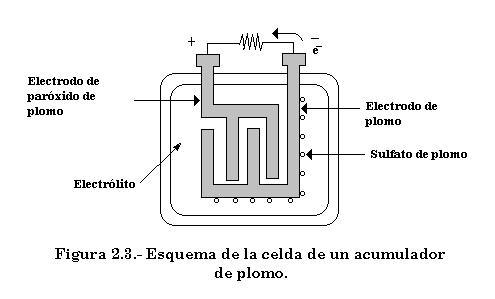
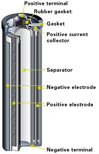
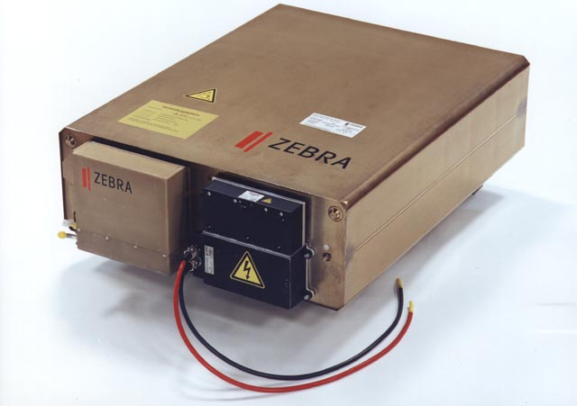

Les bateries

Cada dia utilitzem més bateries, aquí podeu trobar una descripció de diferents tipus de bateries i consells útils sobre l’ús i recarrega de les bateries d’io-liti.
Tipus de Bateries
Una bateria no és res més que un component que emmagatzema electricitat per poder-la donar quan sigui necessària.
Aquests components han experimentat una gran evolució a partir dels anys 90 gràcies a la seva utilització en telefonia mòbil i en informàtica portàtil. Aquesta evolució continuarà de manera imparable, probablement gràcies a la indústria del transport, principalment de l’automòbil.
El transport ha funcionat durant tot el segle XX amb combustibles fòssils (hidrocarburs, benzina i gasoil principalment), però l’esgotament d’aquestes fonts d’energia fa que la indústria es mogui cap a l’electrificació dels automòbils.
Tot aquest desenvolupament fa que les bateries, cada cop puguin emmagatzemar més energia amb menys espai i a un cost inferior. Per tant el desenvolupament va encarat a aquest dos aspectes: més energia per espai/pes i menys cost de fabricació.
Els principals tipus que trobem de bateries són: Plom-àcid, níquel-cadmi, níquel-hidrur metàli·lic, ions de liti, polímer de liti i zebra. Anem a explicar-les una mica.
Plom-àcid

Les bateries de plom són les que fa més anys que s’utilitzen. Tenen una baixa relació entre el pes que ocupen i l’energia que emmagatzemen, però ho compensen, amb que duren molt de temps i tenen un preu relativament econòmic. Des de el punt de vista mediambiental, tot i ser el plom un material pesat, és reciclen fins el 90% del seu contingut.
Tenen un periòde de recarrega que pot durar entre 8 a 10 h.
Són molt utilitzades com a bateries per els cotxes.
Referències
Níquel-cadmi
Tot i fer anys que es van descobrir, el seu cost va fer esperar la seva utilització.
Consten de un ànode de níquel i un càtode de Cadmi. Al ser el cadmi un metall pesat i molt tòxic, és van prohibir a la Unió Europea a partir del 2004.
Tenia l’avantatge de la seva gran durada, unes 1.500 recarregues, però tenien altres inconvenients, com per exemple una baixa capacitat energètica per unitat de pes i que pateixen l’efecte memòria[1].
Referències
Níquel-hidrur metàli·lic

Les bateries de níquel-hidrur metal·lic, van ser creades als anys 70, però es van introduir recentment al mercat, per substituir les de Niquel i Cadmi, que com hem dit estan prohibides a la Unió Europea.
Tenen una altra capacitat d’emmagatzematge per unitat de pes, respecte les bateries de plom, però continuen tinguen el problema de l’efecte memòria[1].
Tot i això han sigut de les més utilitzades per els cotxes hibrids, ja que donen molt bons resultats
Referències
Ions de liti
Tot i ser un tipus de bateries que és coneix des de 1960, el seu desenvolupament és degut a la telefonia mòbil, ja que aconsegueixen emmagatzemar molta energia.
A diferència de les anteriors no pateix de l’efecte memòria, ni té una gran pèrdua de capacitat per l’efecte de no utilitzar-se. Aquestes dues característiques fa que s’hagi incrementat el seu ús en aparells portables, telèfons, ordinadors portàtils, …
No tot poden ser avantatges, és a dir també hi ha inconvenients. Un d’ells es que es sobreescalfen, a més de ser una mica cares de moment, però com tota tecnologia el seu preu tendeix a baixar.
Referències
Polímer de liti
El seu és va començar aproximadament sobre el 2006, per tant encara es troben en desenvolupament.
És una variant de les bateries de liti-ió, a les que s’ha canviat l’electròlit per un polímer, que pot estar en estat sòlit o gelatinós, el que els hi permet donar formes a gust del fabricant.
Aquesta particularitat, fa que els fabricants de mòbils estiguin molt interessats ja que els hi permet més llibertat alhora de dissenyar el seu mòbil.
Una altra avantatge és que tenen una densitat d’emmagatzematge més alta, per el mateix pes poden emmagatzemar pràcticament el doble d’energia.
Com a inconvenients tenim que es tornen inestables si les sobrecarreguem, de la mateixa manera que si es descarreguen per sota d’un valor determinat.
Referència
Zebra

Són bateries de sodi-clorur de nitrat. Són bateries que prometen una alta capacitat d’emmagatzematge d’energia però amb algunes particularitats.
El seu electròlit, necessita estar a altes temperatures, uns 250º a 350º C, per tant s’han d’aïllar de l’exterior, per evitar pèrdues d’energia, s’aïllen al buit.
Te una capacitat d’emmagatzematge similar a la les bateries de Ions de Liti, però amb l’avantatge que poden treballar a altes tensions, fins a 600V, o bé emmagatzemar grans quantitats d’energia.
El nombre de cicles de les bateries es de uns 1000 cops. Però es pot carregar fins al seu 50% amb poc temps uns 30 min.
De moment hi han poques fàbriques, en hi ha alguna a Suïssa.
Referència
Taula comparativa
| Tipus de bateries recargables | Energia (Wh/kg) | Energia/volum (Wh/l) | Potència/Pes (W/Kg) | Nombre de cicles | Eficiència energètica % |
|---|---|---|---|---|---|
| Zebra (NaNiCl) | 125 | 300 | 1.000 | 92,5 | |
| Polímer de liti | 200 | 300 | >3000 | 1.000 | 90,0 |
| Ions de liti | 125 | 270 | 1.800 | 1.000 | 90,0 |
| Níquel hidrur-metàl·lic (NiMH) | 70 | 140-300 | 250-1.000 | 1.350 | 70,0 |
| Níquel cadmi (NiCd) | 60 | 50-150 | 150 | 1.350 | 72,5 |
| Plom àcid | 40 | 60-75 | 180 | 500 | 82,5 |
Font: www.buchmann.ca; www.battery-faq.com
Bibliografia
El futuro del automóvil es elèctrico. Jose Santamarta. Técnica Industrial 281
[1]Efecte memòria: http://www.buchmann.ca/article8-page1-spanish.asp